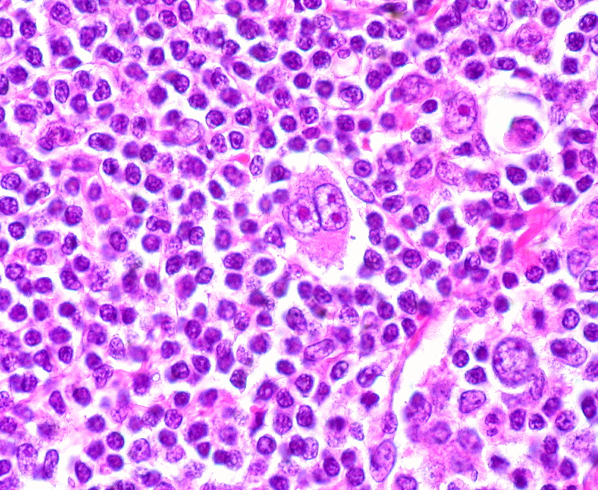

疾病 血液
Hodgkin Lymphoma ｜ 何杰金淋巴瘤 · Hodgkin Lymphoma 筆記更新 2026-07-26· 整理狀態：可用
加入閱讀清單 其他名稱 6 HL · Hodgkin · 何杰金淋巴瘤 · 霍奇金淋巴瘤 · Reed-Sternberg · Hodgkin Lymphoma
一句話總覽
以極少數腫瘤性 Reed-Sternberg（RS）細胞 活在大量發炎背景中為特徵。它沿連續淋巴結 擴散、結外少 （與多數 NHL 相反），好發雙峰年齡 。治癒率高，所以現代難題不是能不能治好，而是長期治療後遺症 。
30 秒行動卡
診斷關鍵 ：頸／縱膈無痛淋巴結 → 切除式生檢 ；classic HL＝CD15+ CD30+ CD20−/弱 CD45−
治療骨架 ：化療（ABVD 等骨架）± Radiotherapy↗ ，依分期與 PET 反應 調整
絕對不可 ：出現 bleomycin 相關肺症狀仍續用；治癒後失去長期追蹤
定義與定位
項目
重點
本質
腫瘤細胞（RS）只占少數，其餘為反應性發炎細胞
好發族群
雙峰 ：年輕成人 ＋ 老年
分類位置
何杰金淋巴瘤；見 Hema Category
擴散方式
連續性 淋巴結區擴散；結外相對少
Classic HL（多數）
項目
重點
腫瘤細胞
RS cell （owl-eye 核仁）
免疫
CD15+、CD30+、CD20−/弱、CD45− ，PAX5 弱+
EBV
部分陽性（mixed cellularity 較高）
亞型
結節硬化型 NS （最常見，年輕女）· 混合細胞型 · 富淋巴球 · 淋巴球貧乏
NLPHL（勿與 classic 混）
項目
重點
細胞
LP／popcorn cell
免疫
CD20+、CD45+、CD15−、CD30− （與 classic 相反 ）
🆕
ICC 等趨向強調其 B 細胞淋巴瘤本質；預後通常佳
病因與機制
flowchart TD
A["生發中心 B 細胞<br/>失去 B 細胞表型"] --> B["RS 細胞形成<br/>逃過凋亡"]
B --> C["分泌大量細胞激素"]
C --> D["招募淋巴球、嗜酸球<br/>形成發炎背景"]
C --> E["全身症狀<br/>B symptoms、搔癢"]
D --> F["淋巴結腫大<br/>腫瘤細胞僅占少數"]
F --> G["沿相鄰淋巴結<br/>連續擴散"]
classDef key fill:#263238,stroke:#000,color:#fff,font-weight:bold
class G key
筆記中的流程與關係

中央 Reed–Sternberg cell 體積巨大，雙核近鏡像排列，每個核內都有醒目嗜酸性核仁，形成 owl-eye；背景則是大量小型反應性淋巴球與其他發炎細胞。Source: Wikimedia Commons — Hodgkin Disease, Reed-Sternberg Cell , Ed Uthman（CC BY-SA 2.0）。
臨床表現
典型 ：無痛性淋巴結腫大 ，好發頸部與縱膈 提示性 ：B symptoms 、全身搔癢少見但重要 ：飲酒後淋巴結疼痛；巨大縱膈腫塊可壓迫氣道
→ 相關主訴流程：Lymphadenopathy↗ 、Fever
診斷
診斷條件
內容
檢體
切除式淋巴結生檢 （FNA 不足以看到背景結構）
確診
發炎背景中找到 RS 細胞 ＋符合的免疫表型
分期
PET-CT ；治療中以 interim PET 評估反應
治療前
肺功能（bleomycin）、心臟功能
要開的檢查 ：Lymph node biopsy↗ 、CBC with differential↗
鑑別診斷
要排除的
支持它的線索
怎麼排除
DLBCL 腫瘤細胞是主體 、瀰漫成片、CD20+ CD45+
免疫組織化學
ALCL 也 CD30+ ，但 T 細胞表型、可 ALK+
T 細胞標記與 ALK
治療
情境
處置
早期
短程化療 ± Radiotherapy↗
進期
完整療程化療（ABVD 等歷史骨架），當代依 PET 反應調整
復發／難治
救援化療 ± Autologous HSCT↗ ；Brentuximab vedotin↗ PD-1 抑制劑
NLPHL
預後佳，較保守；CD20+ 可用 Rituximab↗
併發症與預後
要盯的併發症 ：Febrile neutropenia↗ 、bleomycin 肺毒性 、anthracycline 心毒性長期後遺症（治癒者的主要威脅） ：放療後續發乳癌 （胸部照射的年輕女性）、續發白血病、心血管疾病 預後 ：整體治癒率高 ；NLPHL 通常更佳
禁忌與陷阱
絕對不可
情境
絕對不可
為什麼
該做什麼
用 bleomycin 期間出現乾咳、喘、低血氧
當成感染繼續給下一劑
bleomycin 肺纖維化 可不可逆立即停 bleomycin、評估肺功能與影像
曾接受胸部放療的年輕女性
治癒後就結束追蹤
續發乳癌 與心血管疾病風險長期升高依規範提早、長期做乳房與心血管監測
常見錯誤
用 FNA 診斷 HL——抽到的多半是發炎背景，找不到 RS 細胞。
把 NLPHL 當 classic HL 治——兩者免疫表型正好相反 ，治療策略也不同。
相關連結
SOURCE & CONTEXT
來源與原始筆記 依 [[Hema Category]] 展開；WHO HAEM5（2022）
下載這篇 Markdown ↗ 網站保留原筆記的內容與整理狀態。